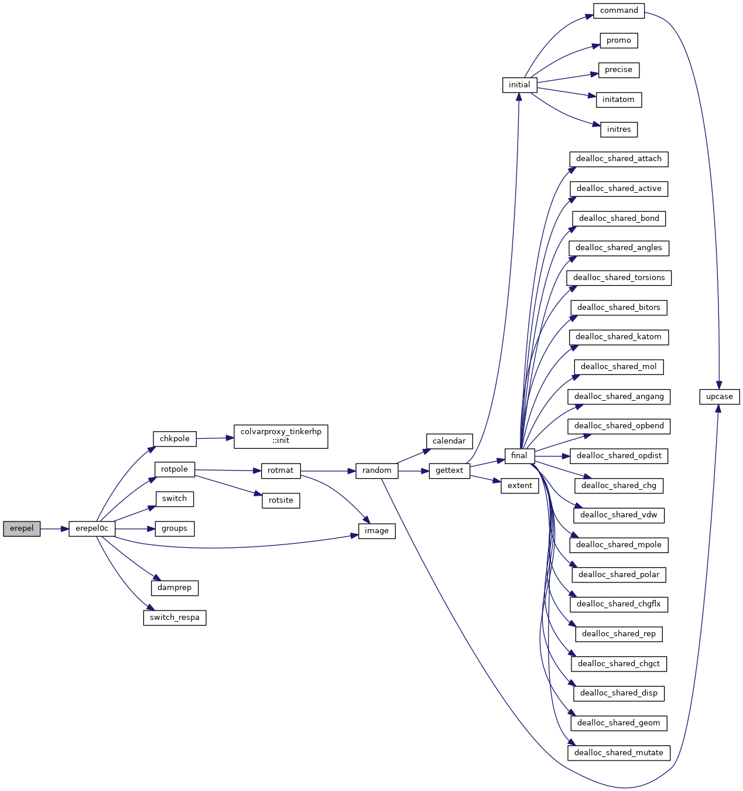
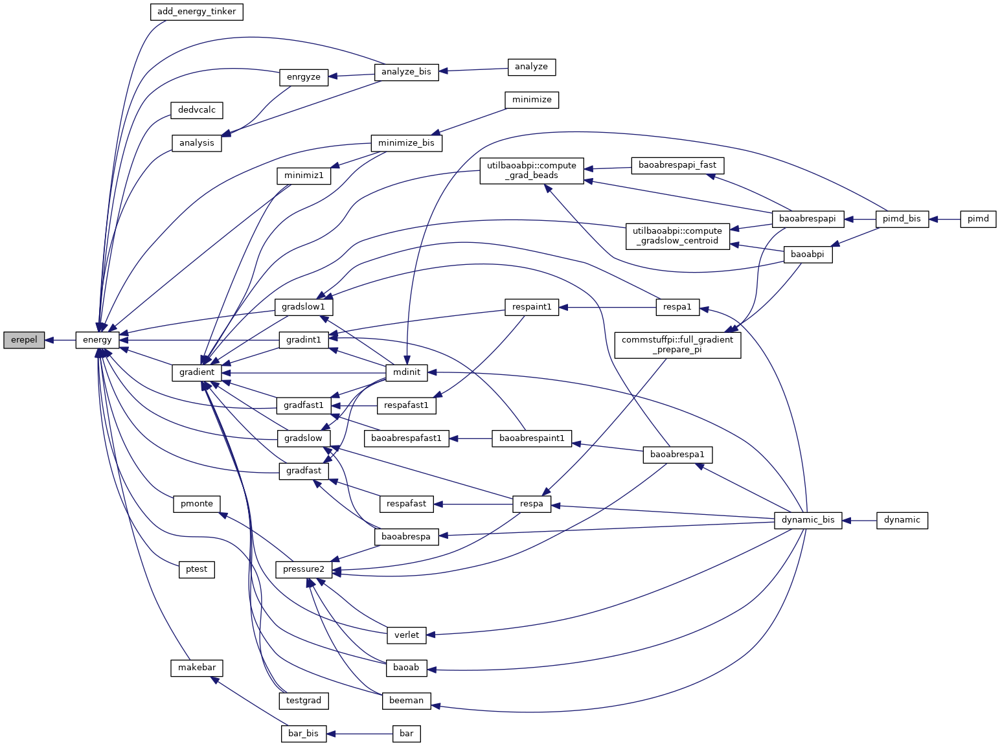
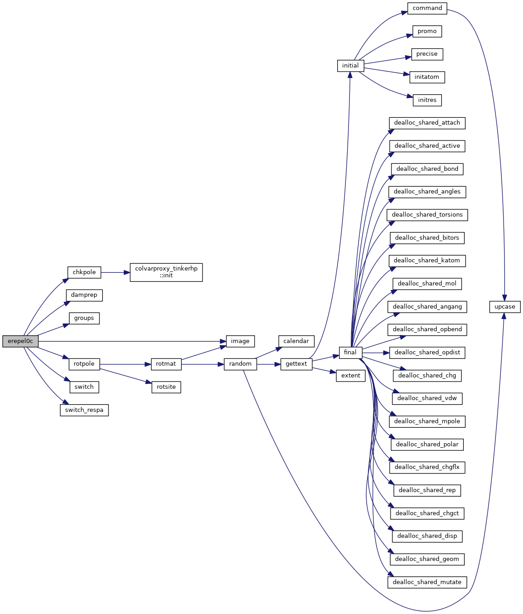
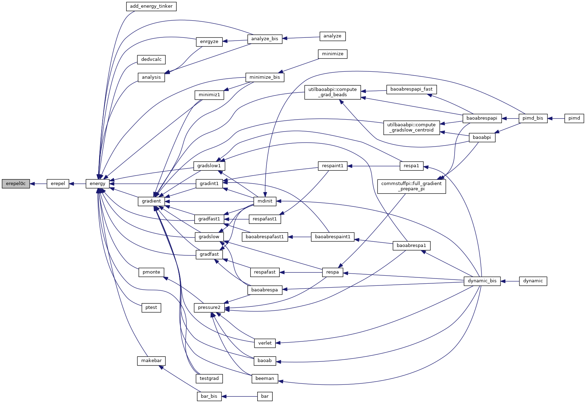

|
Tinker-HP v1.3
|
|
Tinker-HP v1.3
|
Go to the source code of this file.
Functions/Subroutines | |
| subroutine | erepel |
| calculates the Pauli repulsion energy More... | |
| subroutine | erepel0c |
| calculates the Pauli repulsion energy More... | |
| subroutine erepel | ( | ) |
calculates the Pauli repulsion energy
| no | params |
Definition at line 25 of file erepel.f90.
References erepel0c().
Referenced by energy().


| subroutine erepel0c | ( | ) |
calculates the Pauli repulsion energy
| no | params |
Definition at line 54 of file erepel.f90.
References chkpole(), damprep(), groups(), image(), rotpole(), switch(), and switch_respa().
Referenced by erepel().


 1.8.5
1.8.5